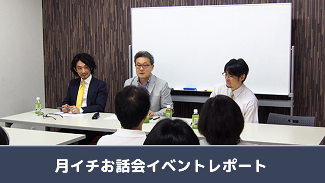

昨日、9月13日は、2学期最初の月一お話会。今月から12月までは「受験シーズン」ということもあり、テーマも受験に関係になるものばかりとなります。参加する私や管野、池村は皆塾の講師ですから、このテーマは得意中の得意。会の中でもいろいろな過去の受験エピソードが飛び出しました。
今月のテーマは受験期の親の接し方について。実は塾講師をやっていると、この親の接し方が生徒の合格にとても大きな影響を与えていることに気づきます。その気づきの全貌をお伝えすべく、まずは池村が「受験生のタイプ」を四つに分類して紹介します。子供に適切に接するためには、まず子供のタイプを正確に把握しておく必要がありますが、これがなかなか難しい。日々変わる子供の様子をじっと観察しなければなりませんから、労力はなかなかのものですが、これが分かってしまうと、それぞれのタイプに合った接し方を自ずとできるようになります。実際これは高校入試を専門に指導する講師の「ノウハウ」といってよいものの一端なのですが、今回はできる限り分かりやすくお伝えしました。
次にわたしが「生徒が思う”保護者にしてほしくないこと”」というテーマでお話ししました。日々受験生の子供と接している中でついつい言ってしまった一言、感情に駆られて取ってしまった行動が「親と保護者の戦争」を引き起こします。親も生徒も精神が高ぶる時期ですから、この戦争は長引くこともしばしば。そんな状態にならないよう、あらかじめNGポイントをご紹介しました。
最後にARCS所長管野から、受験を迎えるに当たって親はどうあるべきかをお話しました。近年受験を見ていると、当事者である生徒よりもむしろ保護者の方がナーバスになっている姿を見ることが多くなりましたが、これはとても危険です。子供にとって親の引力はとても強く、知らぬ間に引き寄せられてしまうものです。ですから、親が「リラックス」して「本音」を出すことによって、子供をプラスの方向に導くことができるのです。
途中管野の長い講師経験から様々な（ぎりぎりの？）エピソードも挟みつつ、会は盛りだくさんで終了しました。会の終了後も、個別に保護者の方々のお悩みに答えることができ、充実の一時間半。正直なところ、塾ではなかなかいえない「本音」をいえるこの会は、やっている私たちも楽しいのです！
次回10月はいよいよ受験情報。本音のぶっちゃけトークで（こっそり）本当のおすすめ高校をお教えします。ぜひぜひふるってご参加くださいね！